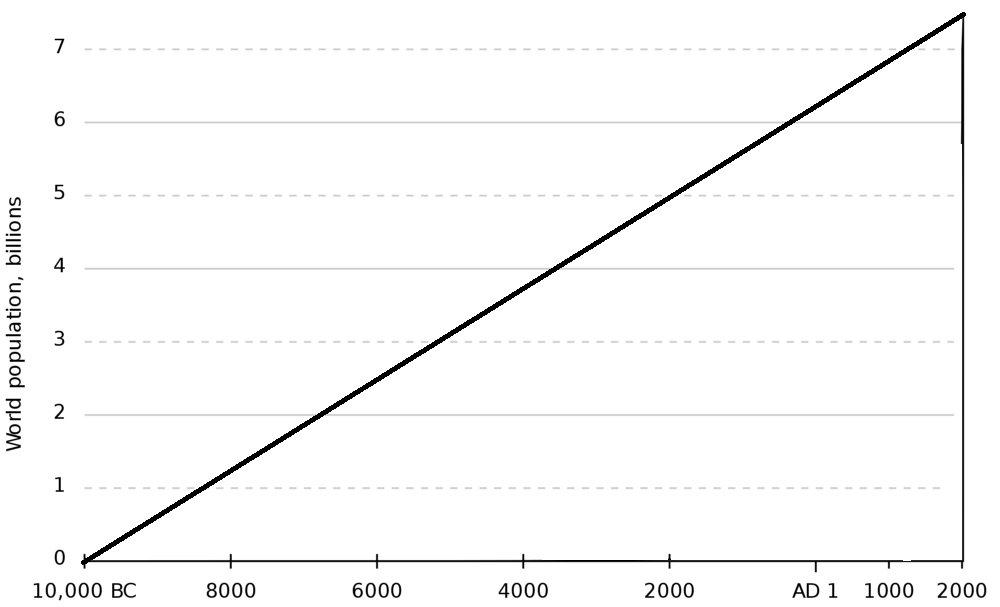
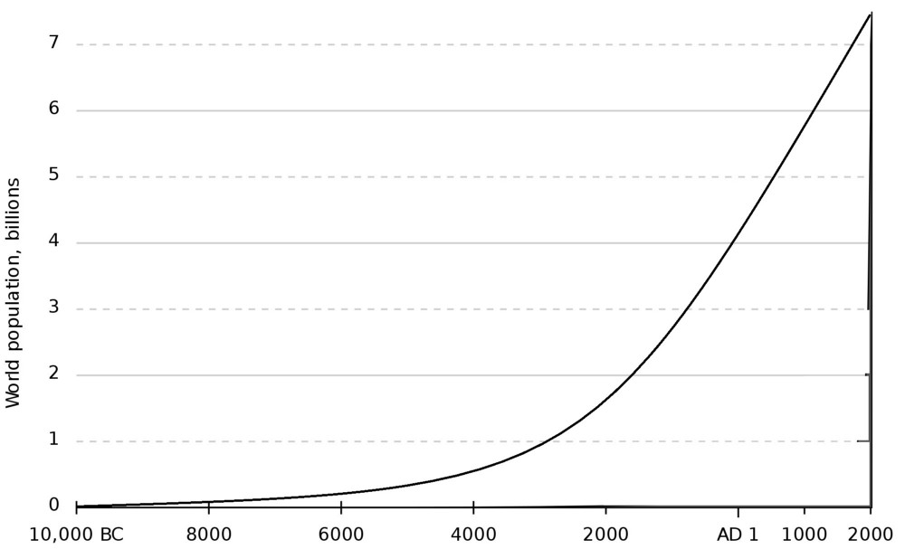
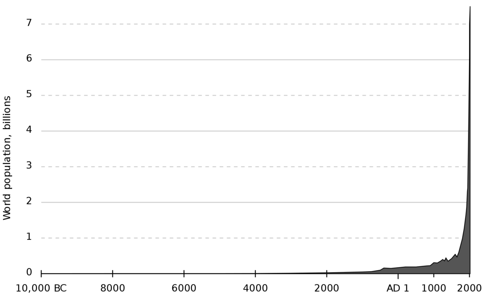

As you might already know, the world current human population is now 7.6 billion people, that is an astronomically large number considering that our species is fairly new to the game. So, the question is, why is this possible? What on earth could make a handful of hunter in the Saharan desert into a sprawling modern civilization we all know and loved today?
These question is hard to answer. So I’m going to ask you, dear reader, a much easier question. What is the graph of human population vs time looks like?
Is it like these…
Or is it like these...
Oh no, dear reader, both of those answer is wrong. The real graph for the world population actually look like these,
“It took 200,000 years for our population to reach 1 billion, and only 200 years to reach 7 billion”
Just what happened in those 200 years that makes our population skyrocket 7 fold? The answer, is Industrial Revolution. Industrial revolution makes basic goods — like food, clothes, and houses — available en masse to good portion of our society. This huge supply of goods, skyrocketed life expectancy and standard of living. which in turn, tremendously increasing our capacity to have a bigger and bigger population.
Historically, there have been 3 industrial revolution, The first Industrial Revolution — which happened around the year 1765 — revolves around the invention of steam engine and rolling machine, which allows for mass production of clothing, steel, and food while also brings lot of jobs to the community.
The Second Industrial Revolution happened around the year 1870, it revolves around the invention of asembly lines and elecrification of machine. Bringing more food, clothing, and this time, medicine.
The Third Industrial Revolution happened in the 20th century (1900–2000) revolves around the boom of computing power, it increase our intelectual capabilities while still decreasing the need of our muscle.
Many of today’s expert argue that we are currenly living in the doorstep of a new industrial revolution, a great event expert seems to agree to call as the Fourth Industrial Revolution.
There is another thing that they agree, that this current industrial revolution will revolve around AI.
AI is the abreviation of Artificial Intelegence. Tecnically speaking, it is a field inside Computer Science which study the behavior of computing agent. Or in english, the study of how we can make our computer more and more intelegent.
Our computer might be smart, in the way that it can calculate thousand of computation in a second, but it can never do those calculation without being told how to. An intelegent computers might, say, produce a music or learn how to diagnose cancer on its own, without human intervention at all.
The promise of intelegent computing might be aluring, but there is a catch. Many people think that the catch is that the system might go rouge and decide to kill all human. Just like in somekind terminator movie. But there is a far more greater danger than that.
All three of the previously stated industrial revolution have one thing in common, they all give a ton of job to the society. That sems to not be the case for the next industrial revolution, The Fourth.
Almost all invention up to this point always have one single purpose, to reduce the demand for human muscle (Eg : tractor, crane, or even car). Historically, it was a good thing. Advancement in technology cut demand for low skill worker (Eg : Factory worker), so the worker move to more demanded, and also (usually) better job. Usually, we are only getting rid of that worse, dangerous or underpaid job.
The advent of intelegent computing, change it all. It enables the once dumb computers of our to do work that only human can do. Suddenly, high skilled job, white collar job, or even profession doesn’t seems to be safe either.
You heard it in the tv, you heard it from newsletter, and you will hear it from me. The Transportation Industry is HUGE, worldwide, transportation industry employs more than 70 million jobs at a minimum. And those jobs, are over. Self driving car is not the future, its already here. Self-driving cars already travelled hundreds of thousands of miles in total without any human intervention. And given that they dont blink, dont text while driving, and dont get stupid, its easy to see why self driving cars are superior to human driver. It is not the fault of the driver though, human is just not made to drive efectively while the bot are designed just for that.
When you talk about lawyering, you must think about the trials itself. But actually, the bulk of lawyering is actually processing a lot data, usually in the form of email, legal document, or any historical data about the subject to find pattern in those document, to predict the likely result of lawsuit. And that is just what the bot are good at doing, bot can skim with great detail thousands of email in just fraction of second, bot can have database of all the law in one particular country, it can’t forget, it doesn’t get sleepy, and have tiny chances of making error, crushing human lawyer in both speed and accuracy.
Remember a few minutes earlier when I mention that AI can learn how to diagnose cancer? Well, I mean it with literal meaning. Bots can learn how to diagnose almost any type of illness provided it have data about that illness and the patient medical data. And believe me, we have a LOT of that kind of data. Research data, medical book, patient medical record, or even your credit card history that you eat fast food once every day can be included in those data and feeded into the AI system, making it way more sophisticated than even human doctor in term of diagnosing illness.
Those are a few example of jobs that can easily be automated (or partialy automated) by AI. The last two example are actualy one of the hard ones to automate, which is why there is a LOT of other job that can easily be automated by AI. Moshe Vardi, professor of computer science at Rice University even predicted that machine could take 50% of our job in the next 30 years. Yes, you heard it right, half of our job and in our lifetime! To put you into perspective, even the great depression only see unlemployment rate of 25% at a maximum. 50% is just crazy.
Surely, the economic and social impact of this dawn of new era will be huge, and there’s one thing that is certain. We need solution, right now.
This work is heavily influenced by a video by CGP Grey — Human Need Not Apply